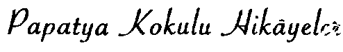
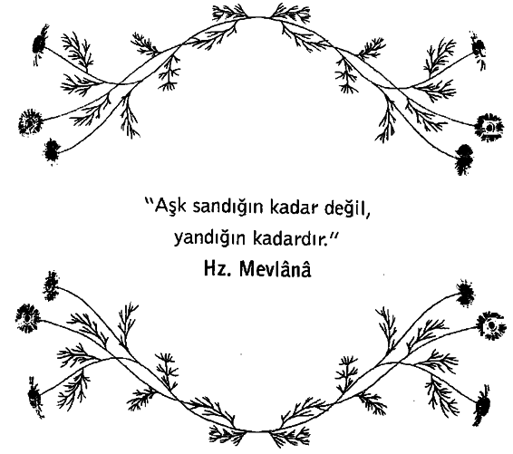

Kıyafetlerinden hayli varlıklı bir aileden geldiği belli küçük kız, avucundaki para destesini sımsıkı tutarak rafları inceliyordu. Burası kentin en büyük oyuncak mağazasıydı. Aranan her şeyin bulunduğu, bitmez tükenmez raf koridorlarının bulunduğu mağazalardan biri.
Rafların arasında öylece gezinirken, reyonların birinde kalakaldı. Muhteşem bir bebekti bu. Dünya güzeli yüzlü ve ipek kadife elbiseli muhteşem bir bebek. Babasına döndü, bebeği işaret etti.
“Avucumdaki para yeter mi?”
Babası başı ile ‘evet5 dercesine olumlu bir hareket yaptı. Bebeği kucakladı ve koridoru takip ederek, kasaya doğru yürüdü. Tam bu sırada tıpkı kendisi gibi, babası ile alışverişe çıkmış bir küçük çocuk gördü. Kısa pantolonluydu, gömleği iyice eskimişti.
Çocuğun elinde birkaç dolar vardı. Raftaki oyunlardan birinin önünde heyecanla durdu.
“İşte istediğim bu baba!” diye çığlık attı, avucunu gösterdi.
"Yeter mi?”
Babasının gözleri önüne doğru eğilirken, başı yetmez* işareti verdi. Çocuk, avucundaki paraya baktı. Oyunu rafa yerine koy
d u. Babasının elini tuttu ve koridorun ucuna doğru yürüdü, boyama kitaplarının olduğu rafa.
Küçük kız kucağındaki bebeğe bir daha baktı. Sonra çocuğun seçtiği oyuncağa döndü. Bebeği götürüp yerine koydu. Oyuncağı eline aldı.
“Yeteri kadar param var mı baba?” dedi.
Babası yine ‘evet’ dercesine başını salladı.
Kasaya gittiler, parayı ödediler. Küçük kız, kasadaki adama bir şeyler fısıldadı. Kız ve babası, geriye çekilip beklemeye başladılar. Az sonra oğlan ve babası, ellerinde bir boyama kitabı ile kasaya geldiler. Kasiyer:
“Kutlarım sizi,” dedi heyecanla. “Bugün bininci müşteri olarak bir armağan kazandınız.”
Oyun kutusunu küçük çocuğa uzattı.
“Harika!” diye çığlık attı çocuk. “Baba, bu benim en çok istediğim şeydi, biliyorsun.”
Baba oğul, sevinç içinde dükkânı terk ederken, içeride kalan baba:
“Ne kadar cömertsin kızım, sana bunu yapma kararım verdiren ne?” dedi.
“Baba, annemle birlikte bana bu parayı verdikten sonra, ‘Seni en çok mutlu edecek şeyi al/ demediniz mi?”
“Tabii öyle dedik, tatlım!”
“Ben de aynen öyle yaptım baba. Şu anda ne kadar mutlu olduğumu biliyor musun?”
